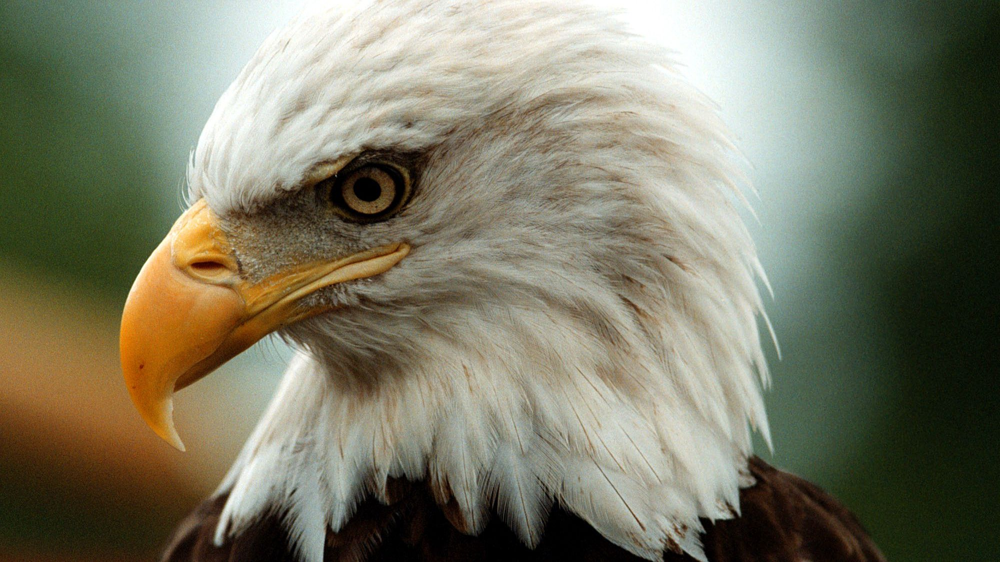
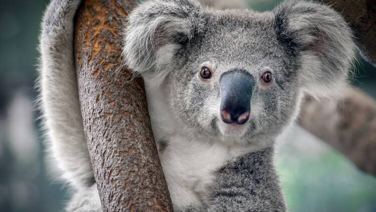

Organizata Ndërkombëtare për Mbrojtjen e
Natyrës bën një bilanc alarmant të kafshëve të cilat janë drejt zhdukjes.
Arsyeja kryesore? Aktivitetet njerëzore. Përveç gjuetisë së paligjshme, këto
kafshë janë gjithashtu viktima të shkatërrimit të habitatit të tyre natyror nga njeriu.
Pas disa vitesh ne nuk do kemi me mundësinë të shikojmë këto mrekulli të natyrës.
Qenia njerëzore është një makinë që shkatërron gjithnjë e më shumë ekosisteme natyrore dhe po degradon zonat ku jetojnë shumica dërrmuese e specieve të faunës në planet. Industrializimi dhe urbanizimi në rritje i kanë ndarë hapësirat natyrore në hapësira thjesht rekreative dhe konservuese. Ndërsa më parë ata flisnin për zgjerim, tani ata flasin për ruajtje. Të gjitha aktivitetet ndotëse dhe degraduese të qenies njerëzore kanë bërë që njerëzit të shfaqen kafshë të rrezikuara. Një kafshë e rrezikuar është ajo që popullsia e saj po bie në mënyrë dramatike me kalimin e viteve ose habitati i së cilës është i copëtuar.


Planeti ka arritur të njohë 8.300 raca kafshësh. Nga të gjitha 8% e tyre janë zhdukur dhe 22% të tjerë rrezikojnë të zhduken aktualisht. Nuk është hera e parë që planeti Tokë përballet me këtë lloj situate, kështu që mund të nxirret se ne po i afrohemi zhdukjes së gjashtë të madhe. Ndikimi i qenieve njerëzore në ekosistemet po bën që shumë specie në të gjithë botën të zhduken. E gjithë kjo po gjeneron dëme të pakthyeshme në biodiversitetin dhe ekuilibrin ekologjik të ekosistemeve.